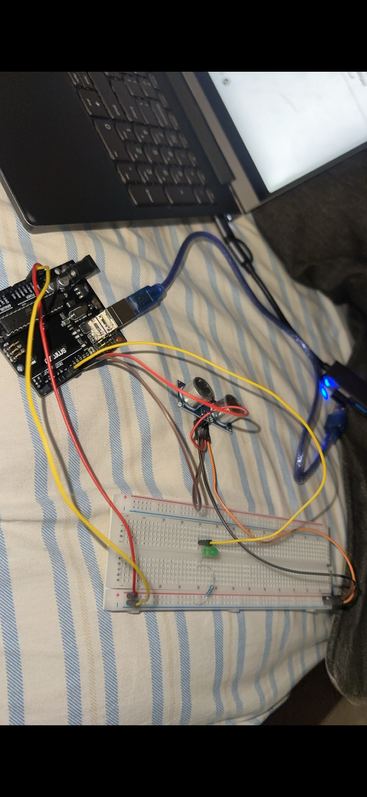
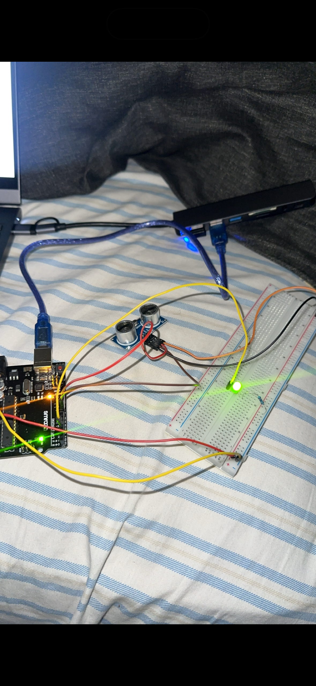

Measure
The ultrasonic sensor checks the distance between the user and the screen.
Personal engineering project · Distance reminder
I built a motion-distance sensor that flashes an LED when someone moves too close to a monitor. It is a simple prototype, but the reason I built it is personal.
I have dealt with poor eyesight and astigmatism, and for a long time I did not fully understand how much my screen habits were part of the problem. Gaming made that harder: when I was focused on a game, I could stay close to the monitor for much longer than I meant to.
Instead of treating that as something I just had to remember, I decided to build a reminder. An ultrasonic distance sensor measures how close the user is to the screen. When the distance becomes too small, the circuit turns on a bright LED. The goal is not to diagnose or treat an eye condition; it is to make a good habit visible at the moment it matters.
I connected the sensor to a microcontroller and breadboard circuit, then tuned the distance threshold and alert response through repeated tests.


The ultrasonic sensor checks the distance between the user and the screen.
The microcontroller compares the reading with the distance threshold.
The LED gives a clear visual cue to move back and reset the habit.
This is an educational prototype and personal reminder, not a medical device or a substitute for professional eye care.
These short clips show the prototype running through two setups while I checked the sensor reading and alert light.
This project taught me to break a personal problem into measurable parts: choose a sensor, set a threshold, create feedback, test it, and improve the result. It also changed the way I think about engineering. A project does not need to be complicated to matter; sometimes the most useful design is a small, well-timed reminder that helps someone change what they are doing.